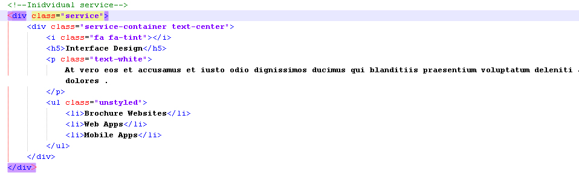
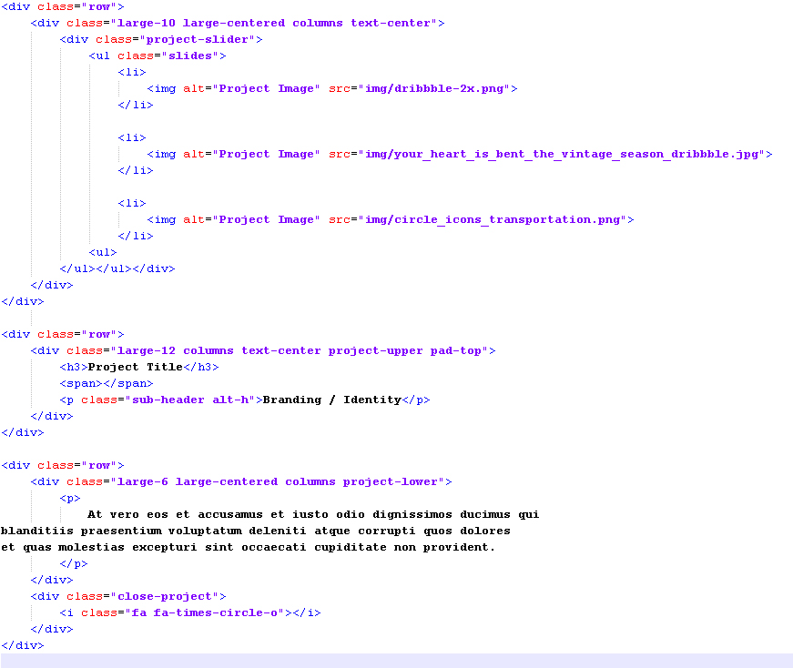
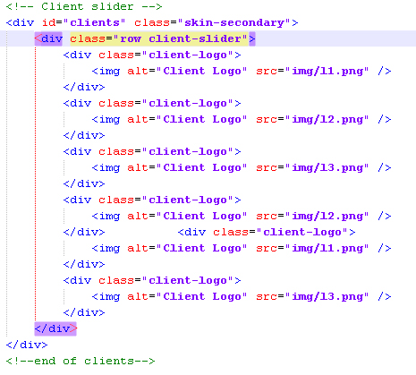
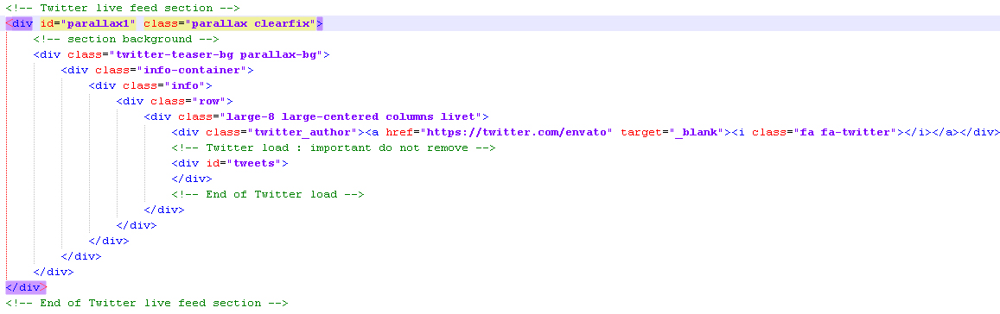
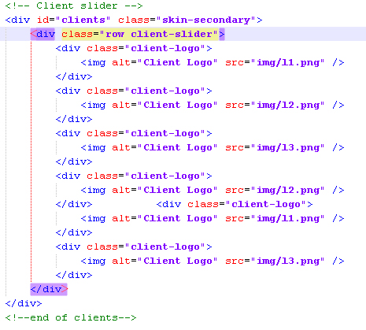
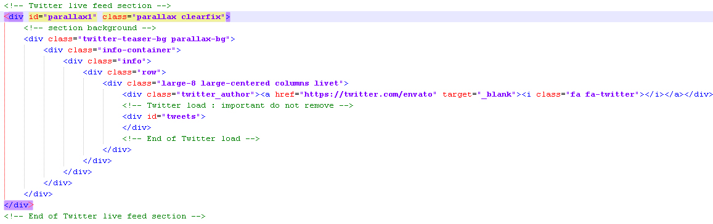
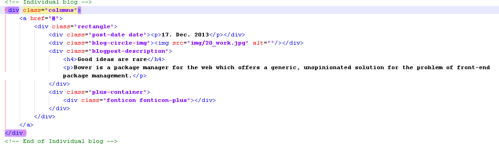

Birva :: Onepage Multipurpose Theme
- Created: 25/12/2013
- latest Update: 31/12/2013
- By: abmathasuriya
- Email: abmathasuriya@gmail.com
Thank you for purchasing my theme. If you have any questions that are beyond the scope of this help file, please feel free to email via my user page contact form abmathasuriya on ThemeForest. Thanks so much!
Overview
Birva One page Responsive Resume / Portfolio Theme is built using Foundation framework: powerful front-end framework for faster and easier web development.
These theme has 2 version light and dark and each version contains further 4 variant 1) Slider variant 2) Video Variant and 3) Menu style Variant and 4) Cross parallax section variant. Dark version contains color combination Dark blue as a primary color and orange as a secondary color. Theme section heading with beautiful shuffle Letters effect.
Before we start, lets take a look on the folder structure of the theme. All individual variant files are placed in the individual folder. The main HTML folder consists of 3 more folders for diferent types of theme assets:
- Img - contaning all images for the theme design. further Image folder contains forder for gallery thumbnail image and fullscreen gallery image.
- js -containing all scripts for the jquery effects
- fonts - fonts folder contains font file for font-awesome fonts
- css - containing all CSS files for the theme. css folder further contains one folder named color for theme color.
- get_mail.php - PHP script for mail functionality.
Installation
This is an HTML theme and doesn't require installation in the traditional meaning of the word. You only need to place the content (HTML files and the three folders) in your prefered web directory
Keep in mind that the folder structure and file/folder names are important for theme to work in correct order.
HTML
The theme is based on Foundation framework. The general template structure is the same throughout the template. Here is the general structure.
- Navigation
- Banner slider
- About
- Gallery
- Skill
- Services
- Portfolio/work
- Testimonials, Clients and Twitter feed
- Blog
- Contact
- Footer
Below are the general HTML structure of index page.

Each section further described in Explaining every section
CSS
The theme comes with 5 CSS (stylesheet) files grouped in the css folder:
1. foundation.css foundation framework.
3. font-awesome.css contains the iconic font style.
4. style.cssis the main CSS file containg the layout styling of the pages for individual theme version i.e style.css in dark version and style.css in light version.
The main sections of the style.css are separated by comments and the classes are named with clear names for better understanding and easier navigation.
5. flexslider.css slider jquery plugin style contain the style used in all slider.
6. prettyPhoto.css jquery plugin prettyPhoto css for display gallery image in lightbox.
Fonts
This theme uses PT Sans google fonts
JavaScript
This template is loaded with both custom JS functions and free jQuery plugins. All JS files are placed in a separate folder called "js". The list of files are as under:
- jquery-1.10.2.min.js
- foundation.min.js and custom.modernizr.js
- jquery.prettyPhoto.js
- jquery.mixitup.min.js
- jquery.flexslider-min.js
- device.min.js
- smooth-scroll.js
- inview.js
- owl.carousel.min.js
- jquery.parallax-1.1.3.js
- parallaxInit.js
- tweetable.jquery.js and jquery.timeago.js
- jquery.shuffleLetters.js
- jquery.easypiechart.min.js and jquery.appear.js
- scripts.js
Some of the jQuery plugins are heavily customized and chages in their files are not recommended.
All JS functions related to the theme content management are placed in scripts.js. The scripts.js file is responsible for the main functions like, Header visibility, Menu smooth scroll, Mobile menu, PARALLAX, shuffle Letters effect, twitter feed and all slider initialization script.
To change twitter username in script.js file, go to commented line called twitter feed and change username parameter.
The full list of options and features are available on: - Tweetable
Explaining every section
This section explains how every section is implemented.
NAVIGATION MENU
The navigation menu, div containing id navigation contains fixed navigation menu:
- Logo
- Main menu for pages
navigation menu visibility control by JavaScript function. Unordered list containing class "menu" contains navigation menu.
div class "large-2 columns" contains logo with float left.
The smooth scroll effect is controlled by jQuery plugin. The screenshot below explains code for fixed menu and logo.

All navigation menu style contains in style.css style with comments like /* NAVIGATION */
Mobile Menu
This theme has a in built Foundation framework Mobile Menu.
SLIDER VARIANT
Section containing Div id "home" contains parallax slider with individual slider heading text. Unordered list id class "slides" contains slider background image and heading text and action button. To change background image, just place your background image in the images folder and open index file and replace the image name img tag in all individual slide.
parallax effect is implemented using custom javascript in script.jas file flexslider plugin used for slider. Below are the general HTML structure for all version

The banner styles are marked under /* HOME SECTION */ in style.css file
VIDEO VARIANT
In both light and dark version, section containing Div id "home" contains Youtube background video with banner headet text rotate. Div class "container-video" contains video link and YTPlayer used for playing video. Div class "video-holder" contains banner heading text and sub-heading that rotate and control by custom script in respective script.js file.
used custom script and YTPlayer plugin for displaying video background. Below are the general HTML structure.

The banner styles are marked under /* HOME SECTION */ in style.css file
MENU STYLE VARIANT
In both light and dark version, section containing Div id "home" contains menu style bottom . div containing id navigation contains fixed navigation menu.
All navigation menu style contains in style.css style with comments like /* NAVIGATION */
CROSS PARALLAX SECTION VARIANT
In both light and dark version, Each section contains header and footer images. img class "parallax-content_header" and "parallax-content_footer" contains png images that gives the cross look for individual section.
All style contains in style.css style
ABOUT SECTION
All html in this section is nested within a section with an id of id "about". About section contains:
- About Heading
- About Description block
- Process Heading
- Process block
- Experience section
Below are the general HTML structure of about us section

about us heading
Div class "page-title" contains about us heading and sub heading. Heading contains shuffle Letters effect. When about section come in view the heading shuffle Letters effect come in action. jquery.shuffleLetters.js and inview.js plugin used for effect and script.js contain initialization of shuffle Letters heading effect. Below are the general HTML structure

Keep in mind that heading tag h1 with id "about-shuffle-latter" is important for shuffle Letters effect.
About Description block
Div containing class "row" contains about us 4 column description with font-awasome icon, title and description. Below are the general HTML structure

Process Heading
Div class "row" contains our process heading text and sub heading text.

Process block
Div class "row" contains large-3 columns process block. Process block contains process front side and process back side with icon and text. both side switch effect takes when hover on respective block. Below are the general HTML structure of process block.

Experience section
Div class "row" contains large-4 columns Experiences block. Below are the general HTML structure of process block.

All styles for this about us section contains in style.css style are available under commented /* ABOUT SECTION */ in respective variant .
GALLERY SECTION
All html in this section is nested within a div with a class of "gallery". There are 18 image block in gallery. Gallery contains thumbnail image with link to open fullscreen image in lightbox. In gallery block contains empty block with text rotator. you can set any of the image block you want as a blank with text rotator. these you can achieve by using css in style.css file and script.js file for respective theme version. be carefully for ding that.
Below are the general HTML for gallery section

Used jquery.prettyPhoto.js plugin for displaying fullscreen image and script.js contains text rotator script.
All style contains in style.css style with comments like /* GALLERY SECTION */ in respective variant
SKILL SECTION
All html in this section is nested within a div with an id of "skill". The HTML consist of a div that contains team section heading, skill slider, Characteristics section and action button.
Div class "skill-slider" contains skill owl carousel slider. Individual skill block contains skill image, name, designation and on hover of the skill block displays piechart with small description about skill. Below are the general HTML structure for team slider.

Characteristics block contain Unordered list class "careers-links" contains icon with pie chart displaying percentage of skills with action button. Below are the general HTML structure

Used custom javascript and owl.carousel.min.js plugin and pie chart plugin for career section.
All style contains in style.css style with comments like /* TEAM SECTION */ in respective variant
SERVICES SECTION
All html in this section is nested within a div with an id of "services". Service section contains:
- background gif image
- Service Heading and sub-heading
- Service block slider
- Action button
- slide-down link
Div containing class "service-slider" contains individual service block. Below are the general HTML structure for service section.
Div class "our-service-container" contains masonry service block with service icon and service description. below are the HTML structure of service section.
All style contains in style.css file with comments like /* SERVICE SECTION */ in respective variant
WORK/PORTFOLIO SECTION
The next code shows an example of works/portfolio grid. All html in this section is nested within a div with an id of "work". Work section contains:
- Work section heading and sub-heading
- Work section description
- Work thambnail fullscreen grid
- ajax-container
- Action button
Unordered list "portfolio-grid" contains work grid blocks with thumbnail image, meta detail with filter category option. Below are the general HTML structure for work block.

Div containing class "project-title" contains anchor tag with "data-project-file" attribute that hold the detail of respective work in seperate html file and these file name you have to specify in "data-project-file" attributes.
Div containing id "ajax-container" hold that respective work detail html page and open in it. for example "data-project-file = 'project5.html' than when you click on that work, project5.html open in "ajex-container".

All work/portfolio styles in style.css file are commented under /* WORK SECTION */ in respective variant
ajax-container
Individual detail work file contains:
- project-slider
- project title
- project detail
- close project button
Below are the general HTML structure for project1.html file.
Used custom javascript, flexslider plugin for work section.
All style contains in style.css file are available under commented /* WORK SECTION */ in respective variant
TESTIMONIAL, CLIENTS SECTION and TWITTER FEED
All html in this section is nested within a div with an id of "testimonials". The HTML consist of a containers that contains testimonial slider. Div with an id of "clients" contain clients slider. Div class "parallax" contains twitter live feed with parallax background contains in div containing class "twitter-teaser-bg" Div id "tweets. Below are the general HTML structure for testimonial, clients and twitter feed.
 



Used flexslider plugin for testimonial slider.
All style contains in style.css file with comments like /* TESTIMONIALS SECTION */ in respective variant
BLOG POST SECTION
All html in this section is nested within a div with an id of "blog". blog post section contains:
- Blog section heading and sub-heading
- Blog description
- Blog post slider
Blog post slider
Div class "blog-slider" contains blog slider. Div class "columns" contains individual blog post. below are the HTML structure of blog section.
Used custom javascript and owl.carousel plugin for blog slider.
All style contains in style.css style with comments like /* BLOG SECTION */ in respective variant
CONTACT SECTION
All html in this section is nested within a div with an id of "contact". The HTML consist of a containers that contains:
- Background google map iframe
- contact heading
- contact form with validation
- Social link
- contact details like address, phone and email
- PHP script to send mail
get_mail.php script contain php code for sending mail from contact form. open get-mail.php in editor and just change email address in get_mail.php save it and upload on live server.

All style contains in style.css file with comments like /* CONTACT SECTION */ in respective variant
FOOTER
All html in this section is nested within a div with an class of "footer". Below are the general HTML structure for footer section which contains text.

All style contains in style.css file with comments like /* Footer Section */ in respective variant
Credits
- foundation.min.js
- jQuery Library
- font-awesome
- device.min
- smooth-scroll.js
- jquery.easypiechart.min
- prettyPhoto
- jquery.mixitup.min.js
- jquery.easing.1.3
- jquery.parallax-1.1.3.js - jquery-parallax
- flexslider-min.js - WooThemes
- owl carousel
- A jQuery plugin for displaying twitter feeds - github
- tweetable.jquery.js and jquery.timeago.js
- shuffle-letters
- All images in theme (only in demo)- Flicker, pixabay and unsplash
- Dark variant video taken from Youtube
Thanks!
Once again, Thank you for purchasing my theme. If you have any questions that are beyond the scope of this help file, please feel free to email via my user page contact form abmathasuriya on ThemeForest. Thanks so much!